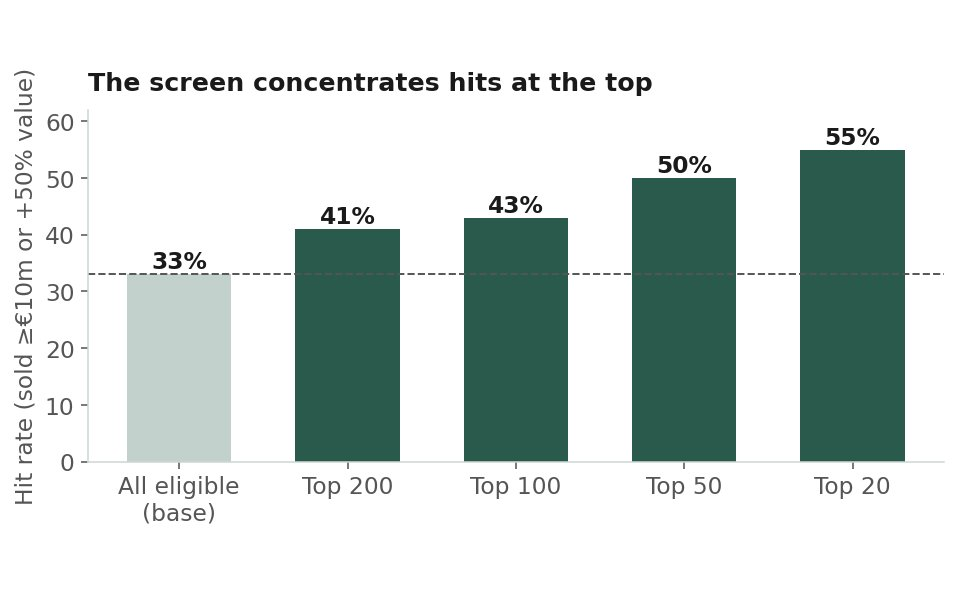
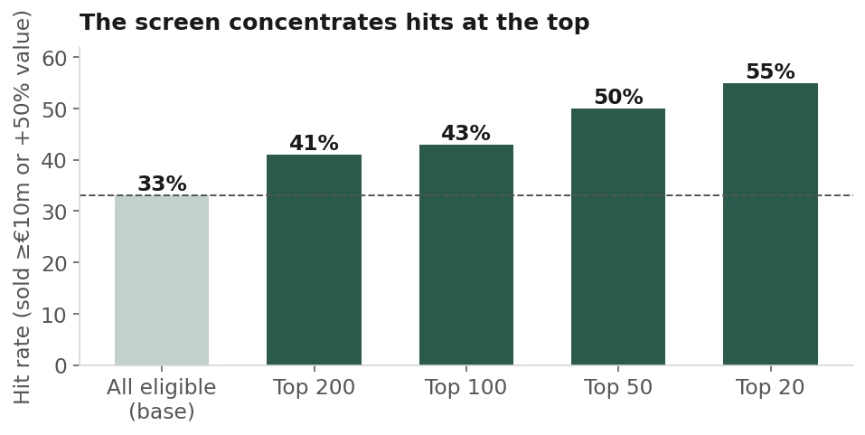
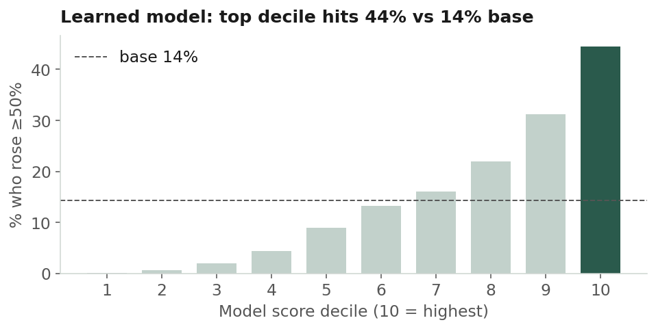
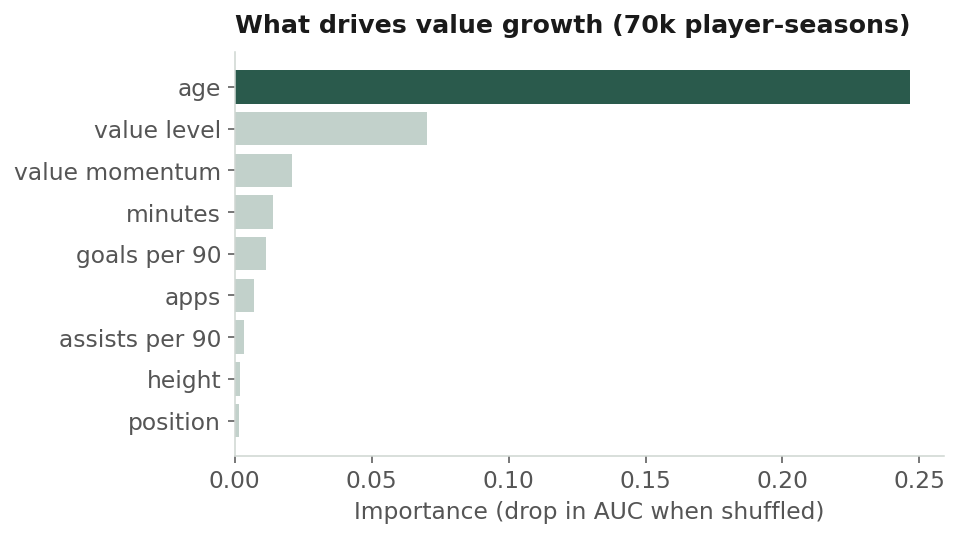
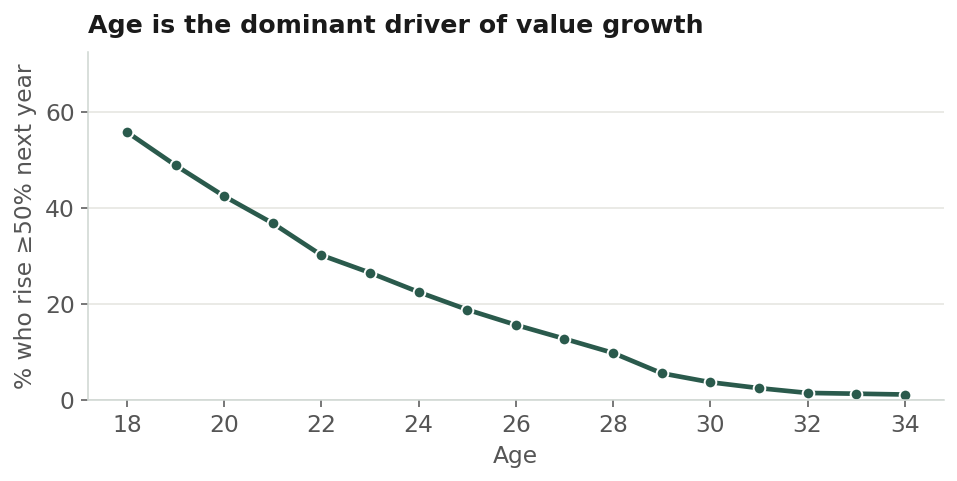

Can Open Data Spot the Next €30m Player?
A transparent scouting screen built from free FBref and Transfermarkt data, back-tested against what actually happened next, and a model trained on 70,000 player-seasons that shows what really drives a player's price.

1. Overview & Motivation
Every summer, clubs spend billions chasing the same insight: which cheap young player is about to become expensive. The received wisdom is that you need scouts, contacts and proprietary tracking data. This project asks a smaller question: how far can you get with data anyone can download?
Further than you'd think, with important caveats. A transparent screen built from open data ranked its top-20 players at a 55% hit rate against a 33% base rate, and a learned model across fourteen seasons tripled the base rate in its top decile, while confirming what football economists have long argued about what drives a player's price.
| Result | Value | What it means |
|---|---|---|
| Screen: top-20 hit rate | 55% vs 33% base | A 1.66× lift in a strict point-in-time back-test |
| Value model: ROC-AUC | 0.81 | Out-of-time test on the most recent seasons (0.5 = coin flip) |
| Value model: top-decile lift | 3.1× | 44% of top-decile picks rose ≥50% in value, against a 14% base |
| Training data | ~70,000 | Player-seasons from 2012 to 2025 |
2. Data & Scope
The pool is the ten strongest leagues in Opta's Power Rankings: the Big Five plus the Championship, Primeira Liga, Eredivisie, and the Brazilian and Argentine top flights. Opta's ratings are only used to choose which leagues to scout; all player data is open.
Performance comes from FBref advanced per-90 stats for 2024/25, roughly 6,700 players across nine of the ten leagues. Market value, age, position and transfer history come from a Transfermarkt-derived Kaggle dataset (davidcariboo/player-scores); Transfermarkt itself is never scraped. Players are resolved across the two sources by accent-folded name plus season-accurate club, matching about 77% of players. Unmatched players are kept, never silently dropped.
Opta withdrew its advanced statistics from FBref in 2026. The analysis here uses tables pulled before that change. Re-running the pull today returns only basic stats (minutes, goals, assists, cards), which is enough for the value model but not for the intensity or misprofiling signals.
3. The Screen: Four Signals
Every metric is converted to per-90 and standardised within the player's positional peer group, so a full-back is never measured against a striker. Position is a first-order determinant of value [3, 4], and scouting practice itself is role-based [1, 2], so cross-position comparison would bias the result.
| Signal | Weight | What it captures |
|---|---|---|
| Performance | 0.35 | Attacking output and creation per 90: shots, key passes, shot- and goal-creating actions |
| Intensity | 0.25 | Pressing, tackling, carrying and recovery volume: an open-data proxy for coping with a high-tempo game, since real GPS data is proprietary |
| Misprofiling | 0.20 | A linear discriminant role model flags players whose statistical fingerprint matches a different role from the one they're listed in |
| Underused | 0.20 | Strong per-90 output on a low share of team minutes: the classic under-priced profile |
An eligibility gate runs first: at least 450 minutes for a stable per-90 sample, aged 24 or under,
no more than 70% of the team's minutes (so nailed-on starters are excluded), and a market value
ceiling of €20m. Each signal is scaled from 0 to 1 and combined into a weighted
scout_score, so any name on the shortlist can be traced back to why it
surfaced.
3.1 Why misprofiling matters
Listed position often mis-describes what a player actually does. The role model learns each position's fingerprint from globally standardised features, then asks how much probability it assigns to the best role other than the listed one. A listed winger whose numbers cluster with progressive full-backs is exactly the kind of player a market pricing by label can miss [1, 2].
4. Does It Work? The Back-Test
A screen is only worth anything if its picks come true. The back-test freezes everything that was knowable in June 2025 (stats, market value as of that date, position), ranks the players, then checks what happened over the following year. A hit is a player sold for a real fee (≥€10m) or whose market value rose by at least 50%. Outcomes are measured strictly after the cutoff, so there is no lookahead.

The names hold up too. High-ranked 2024/25 players that went on to pay off include:
| Player | Club (24/25) | Position, age | Outcome |
|---|---|---|---|
| Abdoul Ouattara | Strasbourg | RB, 18 | Value +1150% |
| Rodrigo Zalazar | SC Braga | MF, 24 | €30m fee, value +67% |
| Enzo Le Fée | Sunderland | MF, 24 | €24m fee, value +56% |
| Lazar Samardžić | Atalanta | MF, 23 | €17m fee |
| Can Uzun | Frankfurt | AM, 19 | Value +150% |
| Nico O'Reilly | Man City | FB, 19 | Value +289% |
| Samuel Dahl | Benfica | LB, 21 | €9m fee, value +86% |
| Iván Fresneda | Sporting CP | RB, 19 | Value +88% |
Value change is Transfermarkt market value to mid-2026.
5. What Drives a Value Rise?
The screen uses hand-picked weights. To ask the data directly, a second model (a histogram-based gradient-boosting classifier) was trained on about 70,000 player-seasons from 2012 to 2025 to predict whether a player's value would rise by 50% or more the following year, using only what was known at the end of each season. Trained on earlier seasons and tested on the most recent ones, it reached a ROC-AUC of 0.81.


Age is destiny. Value level comes next, since cheaper players have more room to grow in percentage terms, then momentum, minutes and goals. It's a striking, if slightly deflating, confirmation of the economics literature [3, 4]: youth is the single biggest lever on a player's price trajectory.

6. Ones to Watch for 2026/27
Running the screen over the current season and filtering for the young-and-still-cheap profile, three names stand out, chosen for a spread of position, league and risk. These are the model's calls, not certainties: a place to point a scout's eye first.
| Player | Profile | Why |
|---|---|---|
| Héctor Fort Elche · €12m |
Right-back, 18 The confident pick |
The screen's number one. An attacking full-back posting an elite output score on a fraction of his side's minutes, the classic "producing above his role" signature. |
| Rayane Bounida Ajax · €5m |
Attacking mid, 19 The value play |
Priced like a prospect, performing like a producer, with a profile spanning creator and second-striker roles. The cheapest of the three and the highest ceiling. |
| Keny Arroyo Cruzeiro · €10m |
Winger, 18 The high-upside flyer |
The market-inefficiency bet: South American wide players routinely see their value multiply on the move to Europe. Higher variance than the other two. |
7. Limitations & Considerations
Age does much of the work. Because a rise is measured in percentages, young players have a mechanical advantage. The genuinely useful scouting question, which players rise beyond what their age predicts, is harder and needs richer inputs.
The multi-season model uses basic stats only. Goals, assists and minutes are in the historical data; xG, progression and defensive volume are not. Whether advanced metrics predict value on top of age is the natural next study.
Market value is a crowd estimate, not ground truth, and it has momentum. Some of the model's skill is simply the market continuing to re-rate players it is already re-rating.
Intensity is a proxy. Without tracking data it can't capture true high-speed running capacity; real physical data would slot straight into that signal.
Coverage gaps. The Championship and Argentina are missing from the value dataset, and name matching resolves about 77% of players.
8. Quick Start
# Install dependencies
pip install -r requirements.txt
# Pull FBref player tables, then run each stage
python -m src.pull_data_selenium
python -m src.run # screen -> shortlist.csv
python -m src.backtest # point-in-time back-test
python -m src.value_model # multi-season determinant model
python -m src.forward # 2025/26 forward run
Weights, filters, leagues and positional peer groups all live in config.yaml. The
Kaggle CSVs go in data/, which is git-ignored, and the offline test suite runs on
synthetic data with pytest.
9. References
- Bergkamp, T.L.G., Frencken, W.G.P., Niessen, A.S.M., Meijer, R.R. & den Hartigh, R.J.R. (2022). How soccer scouts identify talented players. European Journal of Sport Science, 22(7), 994–1004. doi:10.1080/17461391.2021.1916081
- Barraclough, S., Till, K., Kerr, A. & Emmonds, S. (2025). Challenges and solutions to talent (de)selection and development in a youth soccer academy: the implementation of a multidisciplinary athlete profiling tool. Frontiers in Psychology, 16. doi:10.3389/fpsyg.2025.1636386
- Poli, R., Besson, R. & Ravenel, L. (2022). Econometric Approach to Assessing the Transfer Fees and Values of Professional Football Players. Economies, 10(1), 4. doi:10.3390/economies10010004
- Franceschi, M., Brocard, J.-F., Follert, F. & Gouguet, J.-J. (2024). Determinants of football players' valuation: A systematic review. Journal of Economic Surveys, 38(3), 577–600. doi:10.1111/joes.12552